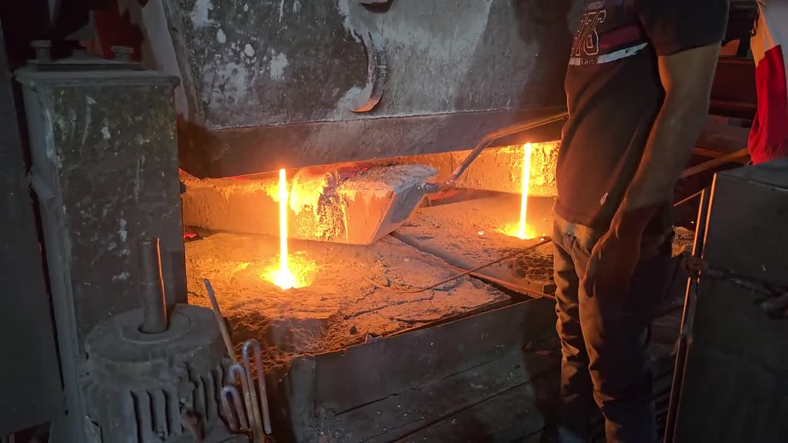

Technical article
Casting Powder Feeding Practice and Controlling Slag Pool Depth

Consumption per tonne is an outcome, not a setting. How feeding practice determines slag pool depth, and the habits that quietly wreck both.
What the pool is doing
Between the free powder on the meniscus and the solidifying shell sits a pool of liquid slag. It feeds the gap between shell and mould wall, and everything casting powder is bought for depends on that pool: lubrication, controlled heat transfer, surface quality.
A pool that is too shallow starves the gap. Lubrication becomes intermittent, the shell drags, and surface defects follow. A pool that is too deep destabilises the meniscus, raises the risk of slag entrapment, and burns powder for no return.
The pool is not something you set. It is the result of how powder is fed, how uniformly it is spread, and how the shop reacts when the surface changes. That makes feeding practice the real control, and it is almost entirely within your gift.
1. Feed little and often
The most common error on the floor is feeding in large intermittent doses. It looks efficient and it is the worst pattern available.
A heavy addition chills the surface, sinks unmelted material into the pool, and produces a sawtooth in pool depth: too deep after the dose, starved before the next one. Neither state is the one the powder was designed for, and the average of two wrong states is not a right state.
Small, frequent additions hold the layer roughly constant. The free powder blanket should stay continuous and the black surface should never disappear entirely between additions.
2. Cover the whole surface, especially the corners
Powder fed into the centre of the mould does not reliably reach the corners, and corners are where surface defects concentrate. Feed across the full mould area, and pay deliberate attention to the narrow faces and the corner radii.
If your operators feed from one side because that is where access is easiest, expect the far side to show it in the billet surface. That is a layout problem with an operational cost, and it is worth solving rather than working around.
3. Read the surface, not the clock
Timed feeding is a proxy. The surface is the actual signal, and it is visible from where the operator already stands.
- Black, matte, continuous — free powder layer intact. This is the target.
- Bright or glassy patches — the layer has been consumed through. Feed now, and feed that area.
- Heaped and grey — over-feeding. Material is sitting unmelted and will sink as a lump.
- Rim building at the wall — slag rim growth. Worth watching across the heat rather than reacting to instantly.
Training an operator to read those four states does more for consumption figures than any change of grade.
4. Do not stir, rake or push the pool
Disturbing the surface to "spread it out" mixes unmelted powder into the liquid slag and drags sintered material toward the gap. If coverage is uneven, fix it by feeding the thin areas, not by pushing material around.
The same applies to clearing rim build-up aggressively mid-cast. Removing rim disturbs the meniscus at exactly the point where surface quality is decided.
5. Match practice to speed changes
Casting speed changes consumption. Powder is consumed per unit of strand surface, so a faster cast draws slag away faster and needs a higher feed rate to hold the same pool.
Shops that keep a fixed feeding rhythm through speed changes get a pool that thins on ramp-up and deepens on slow-down. If your speed varies within a heat, the feed rhythm has to vary with it.
Judging consumption honestly
Consumption per tonne is the number everyone quotes, and it is frequently misread. A low figure is not automatically good: it can mean a starved pool and a surface problem that has not surfaced yet. A high figure is not automatically waste: it can be the correct rate for a fast cast on a large section.
The useful comparison is consumption at constant conditions — same section, same speed range, same steel grade family. Comparing a billet cast against a bloom cast, or a fast month against a slow one, produces a number that means nothing and usually starts an argument.
Record consumption alongside section size and average speed. Then a trend is interpretable.
The habits that quietly wreck it
Feeding to a timer set months ago. Conditions moved; the timer did not.
One operator feeding heavy and another light. Shift-to-shift variation in surface quality that gets blamed on the material.
Opening bags long before use. Casting powder takes moisture. An open bag beside a hot caster is not a stable material.
Topping up the hopper from a different grade. Two grades blended in an undocumented ratio, and the trial data for that week is now meaningless.
A check worth running
For two weeks, have each shift record the surface state at four points in every heat, using the four descriptions above. Lay that against consumption and against your surface defect rate.
Most shops find the variation is between shifts rather than between heats. That is a training answer, not a purchasing one, and it costs nothing to act on.
Need a grade recommendation? Send your steel grades, casting route and the problem you are solving. WhatsApp +91 94313 42715 or email info@pkindustries.net.